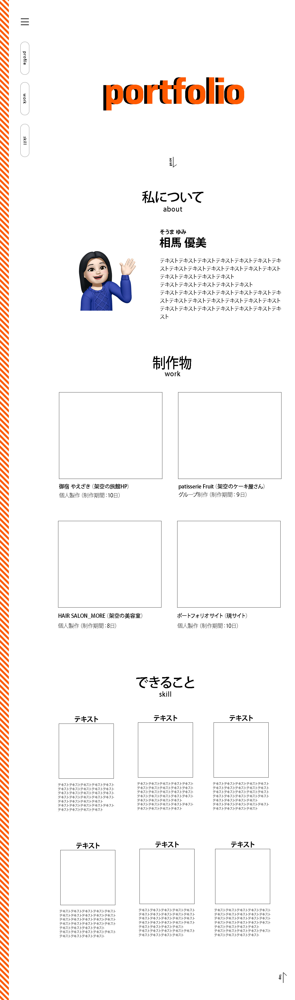

私について
about
そうま ゆみ
相馬 優美
1991年、秋田県生まれ。
高校を卒業し地元の工場に就職するも、昔からなりたかった美容師の夢があきらめきれず専門学校に入学。
無事美容師になれ、自分の技術でお客様に喜んでもらうことにやりがいを感じていたが、一人のお客様に時間をかけられないことや流れ作業のような仕事が合わず、美容室を退職。
ECサイトの営業アシスタントとして転職。
常に良いものを求めてアップデートしていく業界にとても魅力を感じる。
今までを振り返り、自分のスキルでお客様に喜んでいただけることがとても嬉しかったことを思い出す。
将来を模索している中で、スキルを身につけ自分でもサイトを作ってみたい、デザインしてみたいと思うようになりWebデザイナーへの転職を決意。
退職後、職業訓練校にてHTML5・CSS3・jQueryの基本技術を取得。
日々勉強をしていく中で、サイトが出来上がっていくことがとても楽しかったり、構成を考えその通りに実装出来ることに達成感を覚えたり、改めてWebデザインの楽しさを実感する。
現在はPHPとWordpressの習得に向けて勉強中。
制作物
work
-
御宿 やえざき（架空の旅館） 個人製作（制作期間：10日）
-

patisserie Fruit（架空のケーキ屋さん） グループ制作（制作期間：9日）
-

HAIR SALON_MORE（架空の美容室） 個人製作（制作期間：8日）
-
 ポートフォリオサイト（現サイト） 個人製作（制作期間：10日）
出来ること
skill
-
HTML5&CSS3

わかりやすく簡潔な記述、タグの意味を考えての記述を心がけております。
レスポンシブの対応も可能です。
エディタはVisual Studio Codeを使っております。 -
jQuery
動きのあるサイトにするために使用します。
一から全てのコードを書くのはまだ難しいので絶賛勉強中です。 -
Photoshop&illustrator

ロゴやアイコン制作などはillustrator、写真の加工、合成などにはPhotoshopを使用しております。
カンプの作成は、その時に応じてどちらかを使用しております。
まだ最低限の機能しか使えてないので、日々勉強中です。 -
事務ツール

Wordは文章作成、Excelでは四則演算・表の作成、PowerPointではプレゼンテーション作成など
事務作業などに使う簡単な操作ができます。